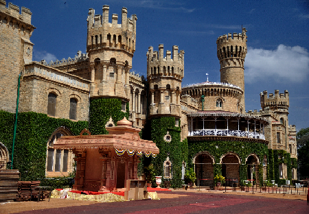
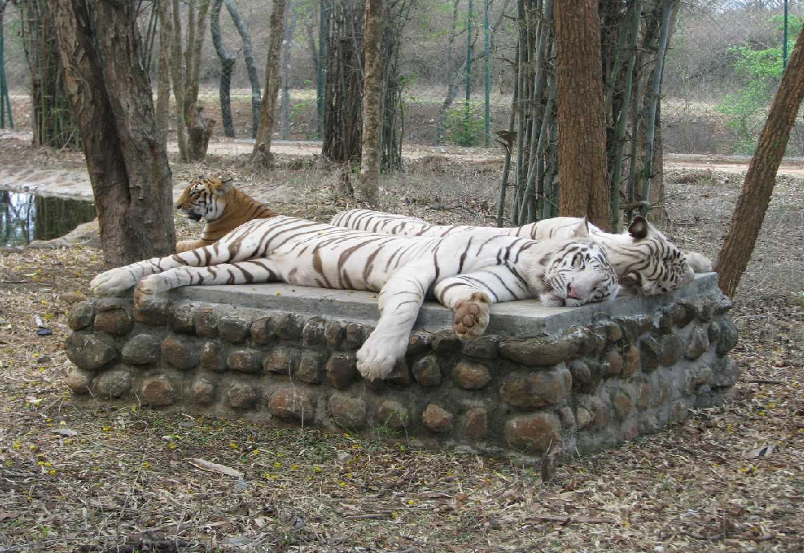
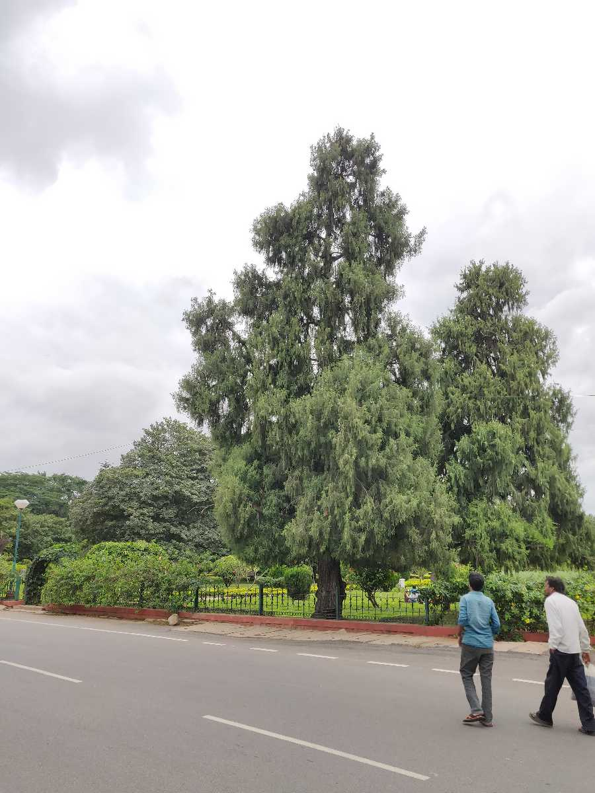

TourKarnataka.com
BEST TOURISM PLACES OF BENGALURU
BANGLORE PALACE

An epitome of great architecture and beauty, The Majestic Bangalore Palace preserves in it the spice of old regal opulence.Currently the central attraction in Bangalore, the palace was built in the year 1878. Chamarajendra Wadiyar's British Guardians the original property in 1873 from the principal of Bangalore Central High School, Rev, J Garret, from his funds. The palace is extraordinarily vast and spread across 45,000 square feet.A mixture of Tudor and Scottish Gothic architecture have resulted into the grand palace that we see today.The wooden structure of the palace along with the beautiful carvings both inside and outside showcases the royal culture in different ways.Apart from being a major tourist destination, the palace is a host to different cultural events, rock shows, and marriages.As per beliefs, King Chamarajendra Wadiyar drew his inspiration for building the palace from the Windsor Castle of London.
Timings: 10:00 AM - 5:00 PM Time Required: 2-3 Hours
Entry fee: 350Rs per each person Holiday: No holiday
Best season to go: All seasons
BANNERUGHATTA NATIONAL PARK

Located 22 km away from Bangalore, the Bannerghatta National Park is a sanctuary for a large variety of flora and fauna. Spread over a massive area of around 104.27 sq. km, this national park was established in the year 1971. The park itself has a number of establishments within its confines, which includes the country's first butterfly park as well.The Bannerghatta Park has various units such as Zoo, Safari and Butterfly park spread over 731.88 Ha. The field activities of the biological park are many fold as it is classified as one of the major zoo in the state/country with a lot of scope for scientific development.The activities prevailing in the Biological Park are Maintenance of zoo - which exhibits varieties of birds, reptiles and mammals within the well maintained enclosures. Running and maintenance of safaris - drive of the tourists through the animals' enclosures in the vehicles i.e. tigers, lions, bears and herbivores safaris and also for breeding of endangered species of animals /ungulates; Rescue Centers to provide life time facilities to the rescued animals like tigers, lions and bears from circuses, madharies etc.,
Timings: 9:00 AM - 1:00PM 3:00PM - 6:00PM Time Required: 2-3 Hours
Entry fee: 350Rs per each person Holiday: Tuesday
Best season to go: Summer season
CUBBON PARK

Spread over an area of 300 acres, Cubbon Park in the city of Bangalore is a major sightseeing attraction rich in green foliage. It is a green belt region of the city and is an ideal place for nature lovers and those seeking a calm atmosphere. Having been laid down by Lord Cubbon, the park is named so in his honour. It is home to more than 6,000 trees that support a vibrant ecosystem. In addition to being a natural sightseeing destination, some of the major structures of the city such as the Attara Kacheri, Cubbon Park Museum and Sheshadri Iyer Memorial Park are also situated here. Another famous attraction in the Cubbon Park is The Bangalore Aquarium, which is the second largest aquarium in India.
Timings: 9:00AM - 7:30PM Time Required: 2 Hours
Entry fee: No entery fee Holiday: No holiday
Best season to go: Spring season
MG ROAD
 One of the busiest roads in Bangalore, MG Road or Mahatma Gandhi Road is a hub of recreational and commercial activity in the city. Swarming with people at almost all the time, MG Road is a one-stop destination for a perfect weekend shopping adventure. Items such as traditional handicrafts, silk, sarees and cutlery and bone china sets are easily available here among other enticing goods.And once you get tired of shopping and are looking for a quick bite to eat, a plethora of cafes and restaurants here are at your service. Nights at MG Road call for partying and dancing till you drop and it packs quite a few high-end pubs as well. One of the most popular shopping and entertainment hubs of Bangalore, MG Road is a must visit when you're in the city.The road is named after Father of the Nation, and its a busy place with lots of shops and street vendors. here people go for shopping. and its next to brigade road also.any visitor visiting bangalore must see mg road because it is one of the best maintained locality in bangalore,clean neat easily accesible and close by places are commercial street for shopping.
One of the busiest roads in Bangalore, MG Road or Mahatma Gandhi Road is a hub of recreational and commercial activity in the city. Swarming with people at almost all the time, MG Road is a one-stop destination for a perfect weekend shopping adventure. Items such as traditional handicrafts, silk, sarees and cutlery and bone china sets are easily available here among other enticing goods.And once you get tired of shopping and are looking for a quick bite to eat, a plethora of cafes and restaurants here are at your service. Nights at MG Road call for partying and dancing till you drop and it packs quite a few high-end pubs as well. One of the most popular shopping and entertainment hubs of Bangalore, MG Road is a must visit when you're in the city.The road is named after Father of the Nation, and its a busy place with lots of shops and street vendors. here people go for shopping. and its next to brigade road also.any visitor visiting bangalore must see mg road because it is one of the best maintained locality in bangalore,clean neat easily accesible and close by places are commercial street for shopping.
Timings: Whole day Time Required: 2 - 3 Hours
Entry fee: No entry fee Holiday: No holiday
Best season to go: All seasons